import polars as pl
from plotnine import *
from gapminder import gapminderVisualization
VIDEO 1 Grammar of Graphics
Welcome to the lesson on data visualization!
Data visualization is one of the most important skills in data analysis. Why? Because a well-made chart can reveal patterns, trends, and insights that might otherwise stay hidden in a spreadsheet. It’s like turning a jumble of numbers into a picture that tells a story.
But let’s be honest—visualizing data can sometimes feel overwhelming. There are so many types of charts to choose from and endless options for customizing them. Scatter plots, bar graphs, heatmaps—what should you use? And even after you pick a plot, there are all these parameters: axis, labels, color scales, gridlines… It’s easy to feel like you’re drowning in options!
Point-and-click tools for visualization, like those built into some software, can be helpful, but they come with their own challenges. They often overwhelm you with choices, and worse, they don’t always give you an easy way to reproduce or share your work.
When you create visualizations using a script instead of a mouse, you unlock an entirely new level of power. Scripting your plots means they’re reproducible. You can tweak them, reuse them, and share the code with others. It’s like building a recipe that others can follow, modify, or inspect to understand exactly how the visualization was made.
Now, let’s take a step back into history for a moment. In 1999, a statistician named Leland Wilkinson published a groundbreaking book called The Grammar of Graphics. Think of it like this: Just as grammar gives structure to language, Wilkinson’s framework gave structure to statistical graphics. He introduced a way to think about and construct plots systematically, rather than relying on intuition or tradition alone.
His ideas were revolutionary and influenced countless tools for making visualizations. One of the most famous examples is the R package ggplot2, created by Hadley Wickham. Wickham built on Wilkinson’s Grammar of Graphics and created what is now considered one of the most powerful and popular visualization tools in the world of data science.
In 2017 a passionate Python developer from Uganda by the name Hassan Kibridge ported ggplot2 into Python. His project became known as plotnine and it soon became a universal success. Here’s the story of plotnine in his own words:
< PAUSE >
VOICE OVER
I discovered this “Grammar of Graphics” thing and found it elegant and powerful. So, I wanted to be able to use it in Python, my preferred programming language for data analysis. I read the key text on the subject by Leland Wilkinson and while I had a good grasp of it, translating it into a usable system would have been a huge undertaking. Hadley Wickham had done so for his doctorate and came up with ggplot2. While I was not confident enough to take this on, I felt that it was quite revolutionary and someone was going to implement it for Python.
And it happened — a project came up that allowed people to seemingly make plots in Python using a grammar just like ggplot2. I started using it but soon discovered that it did not implement a grammar, it just faked one, and it broke down when you tried to make more complicated plots. Since this project was open source, I contributed to improving it. Yet to fix what was lacking grew into a complete overhaul, and this endeavor is what became Plotnine. The first release of which came out in July 2017 after about 3 years of on-and-off development.
To my surprise, Plotnine has been more successful than I imagined. For it, I have twice received the Google Open Source Peer Bonus Award—a recognition from Google employees towards open source software that is essential to their work. I have helped someone who was working on a COVID-19 vaccine trial solve a small problem they had run into with Plotnine. And, there is a book or two about it.
Footnote
Have a look at the full interview here as well as Hassan’s talk at the posit::conf(2023) in Chicago.
While the syntax of plotnine might feel a bit different from typical Python code, don’t worry—there’s a reason for it! The goal is to keep the grammar intact, and that consistency makes it easy to learn and incredibly flexible to use.
In this lesson, we’ll dive into plotnine and explore how it allows you to create clear, beautiful, and insightful visualizations. We’ll guide you step by step so you can quickly become comfortable with its intuitive and expressive syntax.
So, join us on this journey into the wonderful world of data visualization. By the end, you’ll be creating plots that don’t just look good but also communicate your data’s story effectively. Let’s get started!
Before we dive in, let’s talk about the tools and libraries we’ll be using in this lesson.
First up is polars, the powerful data analysis library we’ll be relying on throughout the course. If you’re familiar with Python, you know it’s common practice to use shorthand or aliases when importing libraries. For polars, the standard alias is pl, so that’s what we’ll use here. Anytime we call a function from polars, it will be prefixed with pl. — simple and consistent.
Now, when it comes to our visualization library, plotnine, we’ll take a slightly different approach. Instead of using a prefix, we’ll import all its functions directly into our workspace. This means we’ll use the from plotnine import * syntax, which essentially says, “Hey Python, bring in everything from plotnine!” Why? Because it makes our plotting code cleaner, easier to read, and more expressive.
Finally, let’s talk about the dataset we’ll be exploring today. It comes from the gapminder package. If you’re not familiar with Gapminder, it’s a non-profit organization founded by Hans Rosling and his children back in 2005. Their mission? To promote a better understanding of global development through data—focusing on health, economics, and the environment.
The Gapminder Foundation maintains an incredible collection of statistics about the world, and this package is a small extract from their database. It’s packed with fascinating data on public health, economic development, and global welfare.
Hans Rosling himself is famous for his captivating TED Talk in 2007, where he used data to tell the story of global development. He spoke about life expectancy, GDP, and even the humble washing machine—and how it changed the world. If you haven’t watched that talk yet, I can’t recommend it enough. It’s a masterclass in how to make data come alive.
So, with our tools in hand and an inspiring dataset at our fingertips, we’re ready to start exploring and visualizing. Let’s get to it!
VIDEO 2 Data
The dataset has been conveniently imported for us by the gapminder package. To get started, we can simply type gapminder into our notebook cell and hit Enter. When we do that, we’ll see a preview of the data in the form of a table — what we call a DataFrame. In this table, each row represents an observation, and each column represents a variable.
gapminder| country | continent | year | lifeExp | pop | gdpPercap | |
|---|---|---|---|---|---|---|
| 0 | Afghanistan | Asia | 1952 | 28.801 | 8425333 | 779.445314 |
| 1 | Afghanistan | Asia | 1957 | 30.332 | 9240934 | 820.853030 |
| 2 | Afghanistan | Asia | 1962 | 31.997 | 10267083 | 853.100710 |
| 3 | Afghanistan | Asia | 1967 | 34.020 | 11537966 | 836.197138 |
| 4 | Afghanistan | Asia | 1972 | 36.088 | 13079460 | 739.981106 |
| ... | ... | ... | ... | ... | ... | ... |
| 1699 | Zimbabwe | Africa | 1987 | 62.351 | 9216418 | 706.157306 |
| 1700 | Zimbabwe | Africa | 1992 | 60.377 | 10704340 | 693.420786 |
| 1701 | Zimbabwe | Africa | 1997 | 46.809 | 11404948 | 792.449960 |
| 1702 | Zimbabwe | Africa | 2002 | 39.989 | 11926563 | 672.038623 |
| 1703 | Zimbabwe | Africa | 2007 | 43.487 | 12311143 | 469.709298 |
1704 rows √ó 6 columns
This dataset has one thousand sevenhundred and four rows and 6 columns, so it’s fairly compact but still rich with information. Let’s walk through what each of these columns means:
country: This column lists the names of countries. If you take a look at the data, you’ll notice it starts with Afghanistan at the top and ends with Zimbabwe at the bottom. It seems the data is sorted alphabetically by country.
continent: Here, we have the names of continents. For example, Afghanistan is listed under Asia, while Zimbabwe is under Africa. Makes perfect sense.
year: This column tells us the year of the observation. You’ll notice that each country has multiple rows because data was collected at different times. The dataset starts in 1952 and progresses in 5-year increments, which gives us a nice snapshot of changes over time.
lifeExp: This column stands for life expectancy at birth. If we look at Afghanistan in 1952, for example, the life expectancy was just 28.8 years. Let that sink in for a moment — only 28 years! It’s a sobering reminder of the challenges some nations faced in the mid-20th century.
pop: This column shows the population of each country. Again, looking at Afghanistan in 1952, the population was just under 8.5 million people.
gdpPercap: Finally, this column contains the GDP per capita, expressed in US dollars. From what I understand, these figures have been adjusted for inflation, so they should be comparable across countries and over time.
Altogether, these six columns give us a fascinating lens through which to explore global trends in health, wealth, and population growth. The dataset might look simple at first glance, but it’s packed with stories waiting to be uncovered.
Now that we know what we’re working with, let’s roll up our sleeves and start exploring!
VIDEO 3 First Plot
Now, it’s time to create our very first plot! Here is a question we would like to answer using gapminder data: Do people in rich countries live longer than people in poor countries?
Question
Do people in rich countries live longer than people in poor countries?
The answer may be quite intuitive, but we will continue our investigation further: How does the relationship between GDP per capita and Life expectancy look like? Is this relationship linear? Non-linear? Are there any exceptions to the general rule?
Question
- How does the relationship between GDP per capita and Life expectancy look like? Is this relationship linear? Non-linear?
- Are there exceptions to the general rule (outliers)?
In order to answer these questions, we will create a plot from gapminder data. Here’s the code we’ll use. Take a moment to copy this code verbatim from your screen.
< PAUSE >
(
ggplot(gapminder)+
geom_point(mapping=aes(x='gdpPercap', y='lifeExp'))
)When writing Python code with plotnine — and later when we use polars — you’ll notice that we often wrap our code in parentheses. This is a great habit to get into because it allows us to break our code into multiple lines without worrying about indentation.
Let’s walk through this step by step.
Inside the outer parentheses, the first thing we write is ggplot. This is the foundational function in plotnine, and it stands for Grammar of Graphics plot. Then, in parentheses again, we pass the dataset we want to use — in this case, gapminder.
After that, we add a plus sign. The Grammar of Graphics, which plotnine is built on, thinks of plots as being made up of layers. The + sign we added tells Python that we’re adding more layers or components to our plot. Think of it as saying, “Wait, there’s more!”
On the next line, we write geom_point. This is the function that specifies the type of layer we’re adding to our plot. In this case, it’s a point plot, which means we’ll be drawing points on a graph. Without this layer, our plot would just be an empty canvas.
Inside the geom_point parentheses, we specify the argument: mapping followed by an = sign. This tells plotnine how we want to relate our data to the graph. AES stands for “aesthetics”. The inside of the aes function defines mapping of the variables in our data to certain aesthetical properies of our graph. We’re saying, “Take the GDP per capita (gdpPercap) and map it to the x-axis, and take life expectancy (lifeExp) and map it to the y-axis.” Notice that the column names are enclosed in quotes — that’s important!
Once you’ve written the code, go ahead and hit the Run button. If everything is correct, you should see your plot appear on the screen.
(
ggplot(gapminder)+
geom_point(mapping=aes(x='gdpPercap', y='lifeExp'))
)
Let’s take a moment to reflect on what we just did.
In our code, the first layer was the ggplot function, where we provided the dataset. The second layer was geom_point, which added points to our graph.
The result is a simple yet meaningful scatter plot. It shows a positive, non-linear relationship between GDP per capita on the x-axis and life expectancy on the y-axis. Does this align with what you initially expected? Or does it challenge your assumptions? Already, you can see how visualizing data helps uncover patterns and stories that might not be obvious at first glance.
Take your time to review the code and compare it to the plot we created. Understanding this connection — how the code you write translates directly into what you see on the screen — is the key to mastering data visualization.
In fact, the structure of most plots in plotnine (and its R counterpart, ggplot2) can be summarized with a simple template:
< PAUSE >
Tip
ggplot(data = <DATA>) +
<GEOM_FUNCTION>(mapping = aes(<MAPPINGS>))This template is incredibly flexible and serves as the foundation for almost every visualization we’ll create.
In the remainder of this lesson, we’ll explore how to extend and customize this template to create a wide variety of visualizations. Each new element we add will open up even more possibilities.
I’ll see you in the next one!
VIDEO 4 Axis
Hello again! Ready for a challenge? I’ve got a question for you: How has life expectancy changed over time?
Challenge
How has life expectancy changed over time?
Take a moment to think about it. Better yet, try answering it by modifying the code we wrote in the last lesson.
Here’s a quick hint before you pause the video: The gapminder dataset includes a column called year, which can go on the x-axis. Use that to tweak the code and see what you find. I’ll wait right here while you try it out! Pause the video now and give it a shot. See you in a moment!
< PAUSE >
(
ggplot(gapminder)+
geom_point(mapping = aes(x='year', y='lifeExp'))
)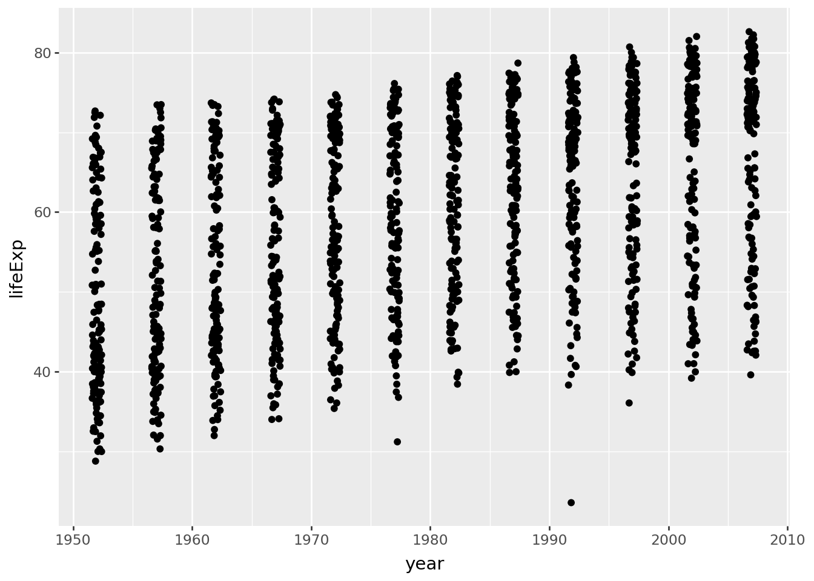
Done? Excellent! Let’s take a look at what we’ve got. Nice work! You should see a scatter plot showing life expectancy over time.
Hmm… notice how some of the points are stacked on top of each other? That’s called overplotting, and it’s pretty common when you have a lot of data points at the same x or y values. Don’t worry—it’s easy to fix!
Instead of geom_point, try using geom_jitter. This will add a tiny bit of random noise to spread out the points so they’re easier to see.
Here’s how you do it:
< PAUSE >
(
ggplot(gapminder)+
geom_jitter(mapping = aes(x='year', y='lifeExp'))
)Pause the video, run this code and check out the difference.
< PAUSE >
(
ggplot(gapminder)+
geom_jitter(mapping = aes(x='year', y='lifeExp'))
)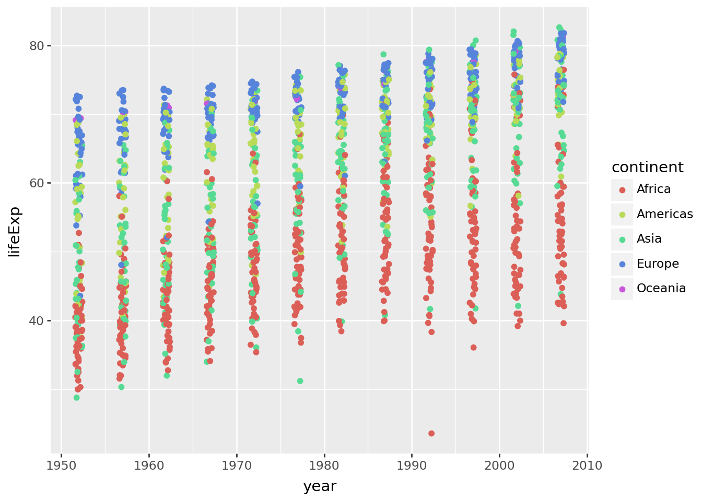
Much better, right? Now we can see the points more clearly.
Let’s keep going with this little game. Here’s your next challenge: Can you visualize life expectancy by continent?
Challenge
Visualize life expectancy by continent
Think about which variable should go on the x-axis this time. Which continent do you think tends to have the highest life expectancy? Modify your code and give it a shot. Pause the video, try it out, and come back when you’re ready.
< PAUSE >
(
ggplot(gapminder)+
geom_jitter(mapping = aes(x='continent', y='lifeExp'))
)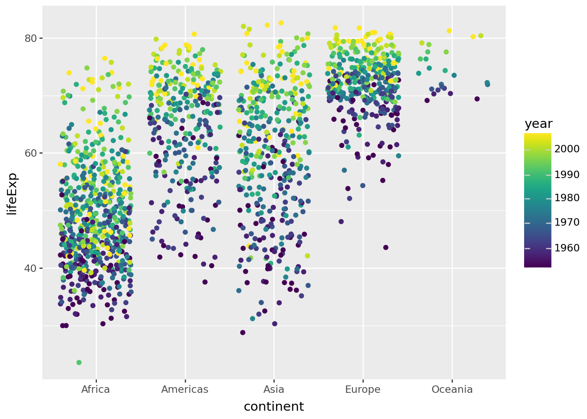
Great job! What do we see here? Looks like life expectancy in Oceania is quite high, although there aren’t many points for that region. Europe is a close second. On the other hand, Africa seems to have the lowest life expectancy overall, judging by the density of points at the lower end of the y-axis.
Here’s another question: Which continent has the widest spread in life expectancy values? That’s right—it’s Asia. There’s quite a bit of variation there, which is something we’ll dig into in more detail later in the course.
Fantastic work so far! Take a moment to review what you’ve done, and I’ll see you in the next section!
VIDEO 5 Aesthetical mappings
Oh, hi there! You know, I’ve been thinking — what if we could combine the graphs from the last two challenges and show the relationship between not just two variables, but three?
Now, don’t worry — we’re not diving into “three-dimensional” plots. Instead, we can represent a third variable using color. Let me show you what I mean.
Here’s modified code that maps the continent variable to the color aesthetic:
< PAUSE >
(
ggplot(gapminder)+
geom_jitter(mapping = aes(x='year', y='lifeExp', color='continent'))
)Run this code and take a look.
< PAUSE >
(
ggplot(gapminder)+
geom_jitter(mapping = aes(x='year', y='lifeExp', color='continent'))
)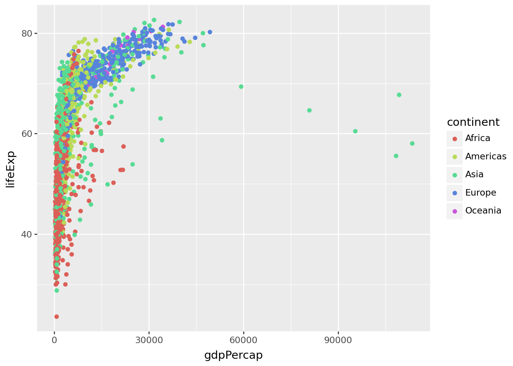
What do you see? Now we can see more clearly how life expectancy has changed over time by continent. For example, the points representing Africa stay clustered near the lower end of the y-axis throughout the years, while Europe’s points are generally higher. Oceania is there too, but it’s barely noticeable because there are so few observations.
Now, I’ve got a question for you: What happens if we switch the mappings of continent and year? Give it a try!
Challenge
Switch the mappings of continent and year in this sample code
(
ggplot(gapminder)+
geom_jitter(mapping = aes(x='year', y='lifeExp', color='continent'))
)< PAUSE >
(
ggplot(gapminder)+
geom_jitter(mapping = aes(x='continent', y='lifeExp', color='year'))
)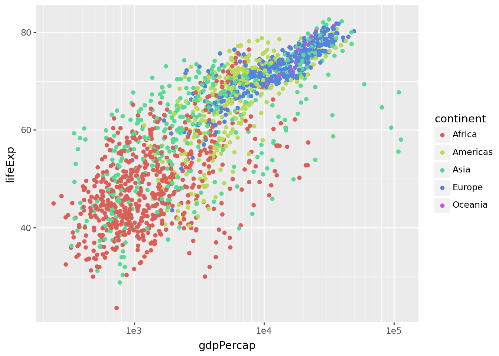
Done? Great! Do you still find this graph useful? Why or why not?
Now let’s tweak it a bit more. What if, instead of mapping color to year, we mapped it to country? Give it a try!
Challenge
Map color to country in this sample code:
(
ggplot(gapminder)+
geom_jitter(mapping = aes(x='continent', y='lifeExp', color='year'))
)< PAUSE >
(
ggplot(gapminder)+
geom_jitter(mapping = aes(x='continent', y='lifeExp', color='country'))
)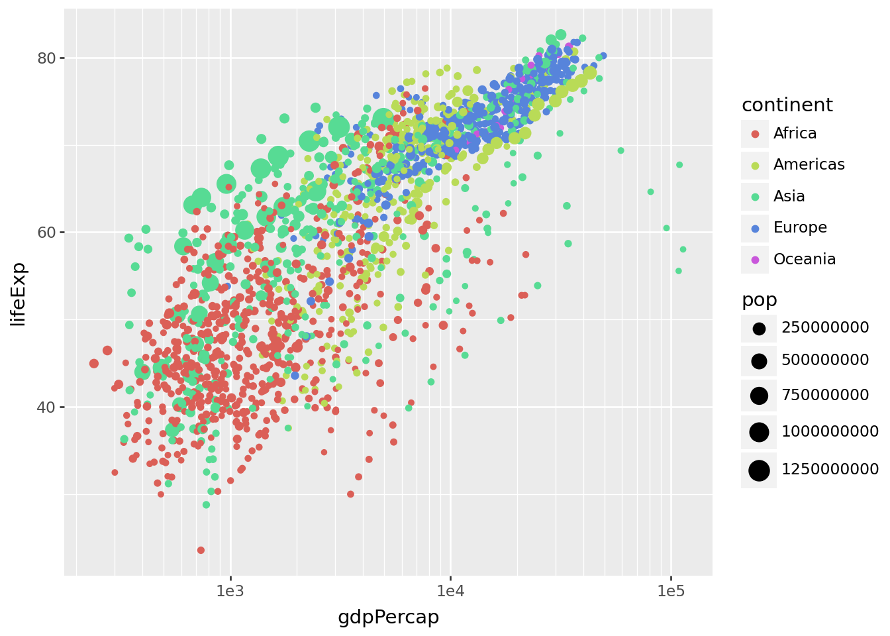
What changed? How does mapping color to country differ from mapping it to year? Take a moment to think about it. What do you think is the main limitation of using the color aesthetic?
Alright, here’s one last challenge for this section: Can you add a splash of color to our original graph of life expectancy by GDP per capita? Let’s color the points by continent.
Challenge
Color the points by continent in this sample code:
(
ggplot(gapminder) +
geom_point(mapping = aes(x='gdpPercap', y='lifeExp'))
)Take a moment to run your code and see what you get.
< PAUSE >
(
ggplot(gapminder)+
geom_point(mapping = aes(x='gdpPercap', y='lifeExp', color='continent'))
)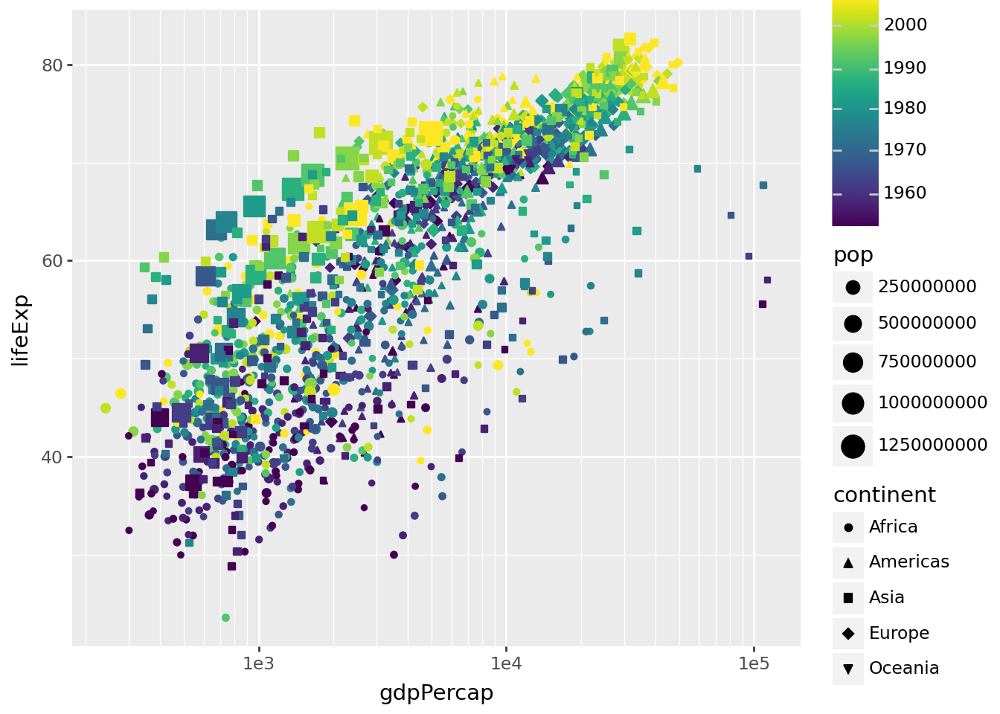
Very illustrative! By adding color, we can now spot trends and patterns more easily. But did you notice something else? There are a few outliers in this plot. Can you tell which continent those points belong to?
The points look a little crowded. But you know, you can always transform GDP per capita to a logarithmic scale for better visualization. Just add scale_x_log10() as an additional layer to your graph, like that:
< PAUSE >
(
ggplot(gapminder)+
geom_point(mapping = aes(x='gdpPercap', y='lifeExp', color='continent'))+
scale_x_log10()
)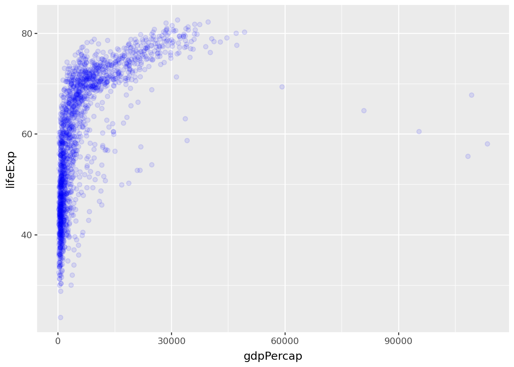
Well done! Be proud of the type of visualizations you are already mastering! In the next section, we’ll explore even more aesthetics that can help us tell richer stories with our data. See you there!
VIDEO 6 More aesthetics
Hello again!
So far, we’ve explored some powerful ways to visualize data using the x, y, and color aesthetics. With these, we’ve been able to represent three variables in a single plot. Very useful, right?
Now, let’s quickly recap what we’ve learned about the color aesthetic. When we map a categorical variable like continent to color, plotnine automatically picks a distinct palette for each category. This works great when there are just a few categories, but as the number of categories grows, the colors start to blur together and lose their effectiveness.
On the other hand, when we map a continuous variable like year to color, we get a gradient. While individual values can be harder to pinpoint, the overall trends are beautifully highlighted by the gradient’s brightness.
Alright, as promised, let me introduce you to another fantastic aesthetic: size.
Imagine we could vary the size of the points in our graph to represent something meaningful—like the population of a country. That would let us visualize not three, but four variables at the same time. Let’s give it a shot. Here’s the code:
< PAUSE >
(
ggplot(gapminder)+
geom_point(mapping = aes(x='gdpPercap', y='lifeExp', color='continent', size='pop'))+
scale_x_log10()
)Run this and take a moment to appreciate the result. Isn’t it fascinating?
(
ggplot(gapminder)+
geom_point(mapping = aes(x='gdpPercap', y='lifeExp', color='continent', size='pop'))+
scale_x_log10()
)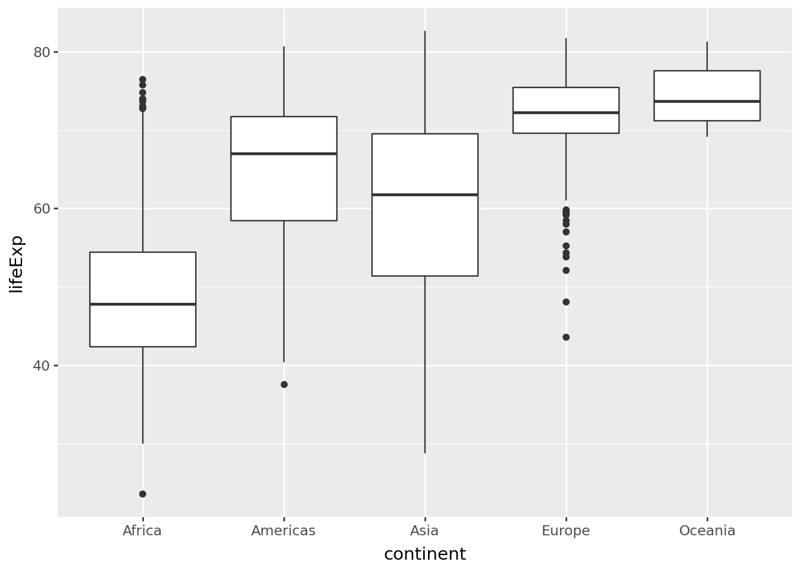
Now we can see the journey of countries like China and India over time. Their points stand out because of their large populations. Under the logarithmic transformation of the x-axis, the relationship between GDP per capita and life expectancy starts to look more linear—but not quite!
Notice the outliers on the far right? They all seem to be from Asian countries. Are these countries rich or poor? Rich, right? But their life expectancy doesn’t quite follow the trend we see in Europe or the Americas. Fascinating, isn’t it?
Now, let me share one more aesthetic property with you: shape.
Shape can be a great tool for visualizing low-cardinality categorical variables, like continent. Instead of just using circles, we can use distinct shapes for each category. This lets us pack even more information into the same graph.
Ready for a challenge? Let’s push the limits and visualize five dimensions in a single plot. Modify the previous example to map year to color and continent to shape. Take a moment and try it. I’ll wait.
Challenge
Map year to color and continent to shape in this sample code
(
ggplot(gapminder)+
geom_point(mapping = aes(x='gdpPercap', y='lifeExp', color='continent', size='pop'))+
scale_x_log10()
)< PAUSE >
(
ggplot(gapminder)+
geom_point(mapping = aes(x='gdpPercap', y='lifeExp', color='year', size='pop', shape='continent'))+
scale_x_log10()
)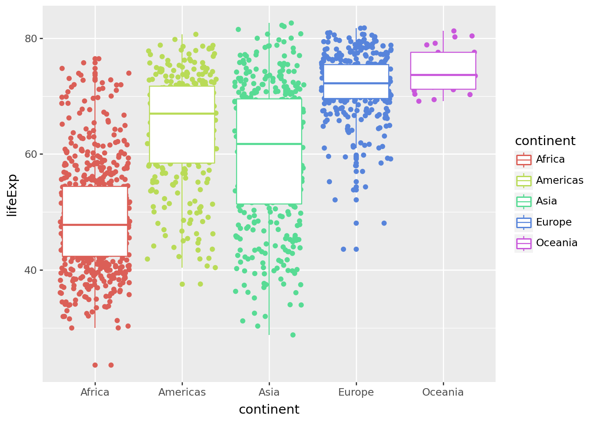
What do you notice? Can you tell whether those Asian outliers come from small or large countries? Are they from earlier or later time periods?
These are the kinds of questions we can answer when we use multiple aesthetics thoughtfully. Isn’t it amazing how much information we can pack into a single visualization?
Fantastic work today! In the next lesson, we’ll continue exploring new tools and techniques to take your visualizations even further. See you soon!
VIDEO 7 Non-data linked properties
Welcome back!
So far, we’ve packed a lot of information into single graphs using data-mapped aesthetics like color, size, and shape. While this approach is powerful, let’s face it—combining too many aesthetics can make a plot feel busy and overwhelming.
Sometimes, less is more. A clean and simple graph, highlighting just one or two aspects of the data, can be just as insightful—and a lot easier on the eyes.
Now, the default style in plotnine is already quite nice, but there may come a time when you want to tweak things to better suit your storytelling. So, let’s look at how to customize graphs using non-data-linked properties—those that aren’t mapped to a variable but instead apply globally to all points in the graph.
Here’s an example. What if we want all the points in our plot to be the same color, say blue? And what if we also want to adjust their size and transparency? Here’s the code to do that:
< PAUSE >
(
ggplot(gapminder)+
geom_point(mapping = aes(x='gdpPercap', y='lifeExp'),
alpha=0.1, size=2, color='blue')
)Go ahead, pause and give this a try.
< PAUSE >
(
ggplot(gapminder)+
geom_point(mapping = aes(x='gdpPercap', y='lifeExp'),
alpha=0.1, size=2, color='blue')
)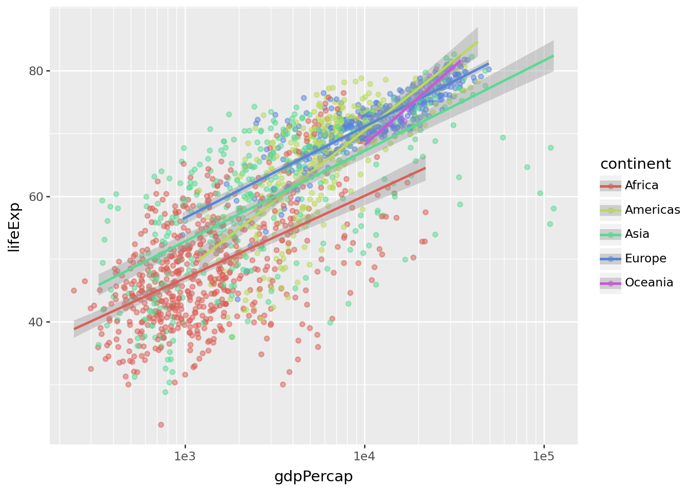
Beautiful, isn’t it? All the points are now blue, with a larger size and a soft transparency that makes overlapping points blend together nicely. This transparency, or alpha, helps highlight areas where the data is dense—like shadows on a heatmap.
Notice something? The color, size, and alpha settings aren’t part of the aes() function. That’s because these properties aren’t mapped to any variable in the data. Instead, they’re applied uniformly to every point in the plot.
Let’s break it down:
color="blue": The color is set as a character string, wrapped in quotes. You can experiment with other colors too—try red, green, or even hex codes like “#FF5755”.size=2:The size of the points is specified as a number, in millimeters. Increase the size to make the points larger or decrease it for smaller ones.alpha=0.1: transparency is controlled by a decimal value between 0 and 1, where 0 is completely transparent and 1 is fully opaque.
Finally, let’s talk about shapes. In plotnine, shapes are represented by numbers. For example:
- 0 is a square,
- 1 is a circle,
- 2 is a triangle,
- 20 is a small filled circle.
Here’s a challenge for you. Change the shape argument in the code to explore different shapes. Try values between 0 and 25, and see how your graph changes. You’ll find the full list of shapes in the plotnine documentation.
Challenge
Change the shape argument in the code to explore different shapes.
So, what do you think? With just a few tweaks, we’ve turned our scatter plot into a clean and stylish visual. Customizing non-data-linked properties like this is a great way to emphasize certain elements of your data without overwhelming your audience.
In the next lesson, we’ll explore even more ways to take your visualizations to the next level. See you there!
VIDEO 8 Geometrical objects
Welcome back! Let’s dive into another exciting aspect of creating visualizations in plotnine: geometrical objects, or geom_ functions.
These geom_ functions are the building blocks of your plots, allowing you to highlight different aspects of your data. By swapping or combining geom_ layers, you can tell entirely new stories with the same dataset.
For example, what if we wanted to show the development of life expectancy over time for each country? We could use geom_line() to connect individual data points belonging to the same country.
Here’s the code to do just that:
< PAUSE >
(
ggplot(gapminder)+
geom_line(mapping = aes(x='year', y='lifeExp',
group='country', color='continent'))
)Note that we have a new aesthetics called group. It indicates which points need to be connected together to a line. Here we are drawing one line per country. Take a moment to run this and see what you get.
< PAUSE >
(
ggplot(gapminder)+
geom_line(mapping = aes(x='year', y='lifeExp',
group='country', color='continent'))
)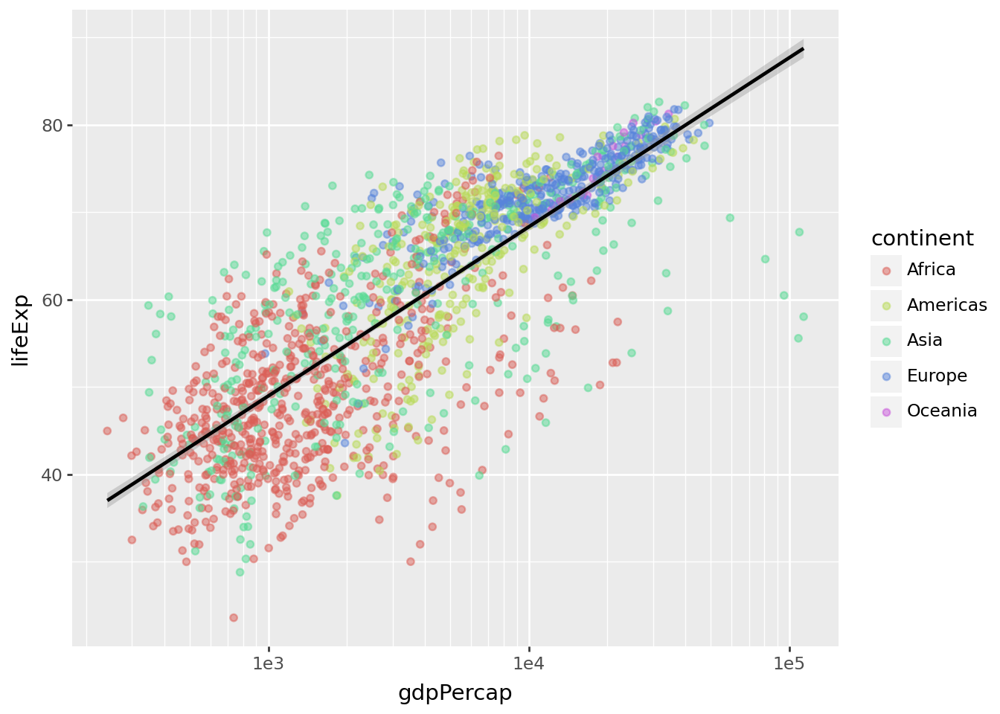
Do you see it? Each country now has its own line, colored by continent. It’s fascinating to watch life expectancy trends unfold over time. But look closely—you might notice some sharp, sudden drops for certain countries. What do you think caused these declines? Wars? Epidemics?
We’ll learn how to zoom in on these tragic moments and identify the affected countries later in the course, once we’ve mastered some data wrangling with Polars. For now, make a mental note of this question so you can return to it later.
Another powerful geometrical object is geom_boxplot(). This creates a “box-and-whisker” plot that illustrates the distribution of values within categories.
For example, let’s visualize how life expectancy varies by continent:
< PAUSE >
(
ggplot(gapminder)+
geom_boxplot(mapping = aes(x='continent', y='lifeExp'))
)Pause, run the code and take a look.
< PAUSE >
(
ggplot(gapminder)+
geom_boxplot(mapping = aes(x='continent', y='lifeExp'))
)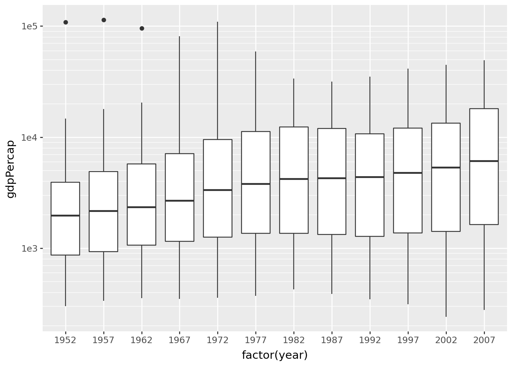
The box represents the interquartile range—the middle 50% of data—while the line inside the box marks the median. The “whiskers” give you an idea of the spread of the bulk of data, and any points outside this range are plotted as individual outliers.
Now, wouldn’t it be great to combine this boxplot with our jittered points from earlier? This would help us see both the overall distribution and the outliers more clearly. Let’s layer them together:
< PAUSE >
(
ggplot(gapminder)+
geom_jitter(mapping = aes(x='continent', y='lifeExp', color='continent'))+
geom_boxplot(mapping = aes(x='continent', y='lifeExp', color='continent'))
)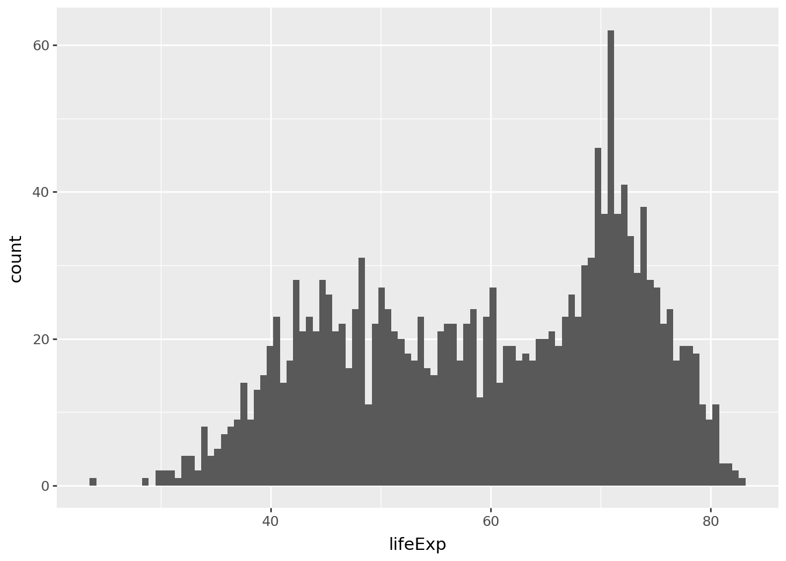
Looks great, doesn’t it? But notice something—there’s some duplication in our code. We had to repeat the same mappings for both geom_jitter and geom_boxplot. That’s fine for now, but it can become cumbersome as your visualizations grow more complex.
Here’s a trick to make your code cleaner: you can move shared mappings to the parent ggplot() function. This way, every layer will “inherit” these mappings automatically:
< PAUSE >
(
ggplot(gapminder, mapping = aes(x='continent', y='lifeExp', color='continent'))+
geom_jitter()+
geom_boxplot()
)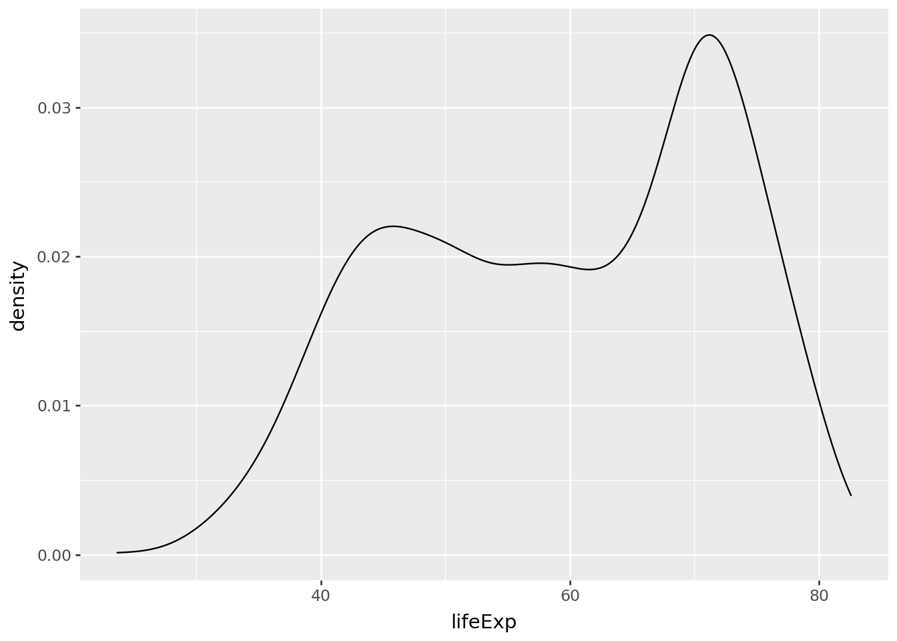
See? No more repeating yourself! You can still add layer-specific settings or arguments within individual geom_ functions if needed.
Tip
When building complex plots, start by adding one layer at a time. Once you’ve got the basic structure, move any common arguments up to the ggplot() function. This keeps your code tidy and easier to read.
Great job so far! In the next lesson, we’ll explore even more ways to enhance your visualizations. See you there!
VIDEO 9 Trend lines
Welcome back! Now, let’s take a closer look at the relationship between GDP per capita and life expectancy.
At first glance, life expectancy seems to improve as countries get richer. But is this relationship consistent across continents? Let’s find out by adding trend lines to our plot.
Trends are essentially linear regression lines. You might remember them from school—they represent the best-fit line through your data. Here’s how we can add them to highlight differences in this relationship by continent:
< PAUSE >
(
ggplot(gapminder, mapping = aes(x='gdpPercap', y='lifeExp', color='continent')) +
geom_point(alpha=0.5) +
geom_smooth(method='lm') +
scale_x_log10()
)Take a moment to run the code and see the result.
< PAUSE >
(
ggplot(gapminder, mapping = aes(x='gdpPercap', y='lifeExp', color='continent')) +
geom_point(alpha=0.5) +
geom_smooth(method='lm') +
scale_x_log10()
)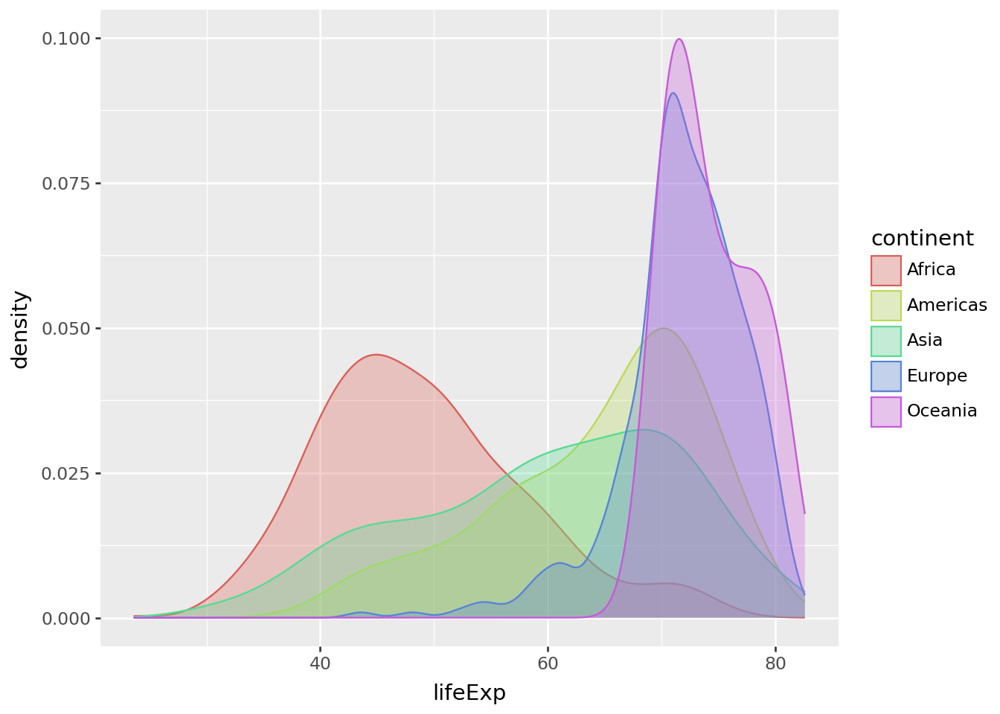
What do you observe? By default, geom_smooth() creates a regression line for each continent, and plotnine even adds confidence intervals—those shaded gray areas around the lines. These intervals give us an idea of how well the model fits the data.
We also used the alpha argument to make our points semi-transparent. Why? It reduces visual clutter and lets the trend lines stand out more. Did you know that transparency can also be mapped to a variable? That’s right—just like color or size, you can use alpha as a mapping aesthetic to make transparency vary based on your data. Try experimenting with that later!
Here’s a task for you: Modify the code we just used so that instead of creating separate regression lines for each continent, plotnine creates a single trend line for all data points.
Here’s the code to start with:
< PAUSE >
Challenge
Create a single regression line for all data points modifying this sample code
(
ggplot(gapminder, mapping = aes(x='gdpPercap', y='lifeExp', color='continent'))+
geom_point(alpha=0.5)+
geom_smooth(method='lm')+
scale_x_log10()
)Take a moment to think about it. How can you combine the points colored by continent with a single global regression line?
There’s more than one way to solve this problem—see what you can come up with!
< PAUSE >
Did you find this challenge hard? It’s ok! Let’s step through it together!
In our previous example, we declared all the mappings—x, y, and color—at the global level, in the ggplot() function. This means that every layer inherited these mappings. While this works well for most situations, it’s not what we need here.
To build a single trend line for all data points, we must ensure that the color aesthetic applies only to the points and not to the trend line. How do we do that? By moving the color mapping from the global level into the geom_point() function.
Here’s what the updated code looks like:
< PAUSE >
(
ggplot(gapminder, mapping = aes(x='gdpPercap', y='lifeExp'))+
geom_point(aes(color='continent'), alpha=0.5)+
geom_smooth(method='lm')+
scale_x_log10()
)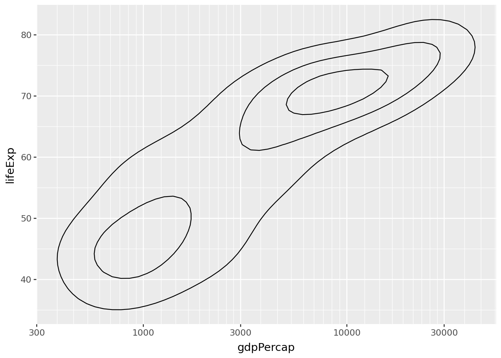
By moving the color aesthetic into geom_point(), it now affects only the points layer. Notice that it’s still wrapped in the aes() function because it remains a data-linked property. Meanwhile, the trend line—added by geom_smooth()—inherits only the global mappings for x and y. This creates a single linear model across all continents, as we wanted.
Take a moment to observe how this subtle adjustment changes the visualization and makes the trend line easier to interpret.
Some of you might have come up with an alternative solution. Instead of changing the color aesthetic’s scope, we can override it directly within the geom_smooth() layer. In this case, the color aesthetic remains global, but we specify a non-data-linked property for the trend line, such as making it black:
< PAUSE >
(
ggplot(gapminder, mapping = aes(x='gdpPercap', y='lifeExp', color='continent'))+
geom_point(alpha=0.5)+
geom_smooth(method='lm', color='black')+
scale_x_log10()
)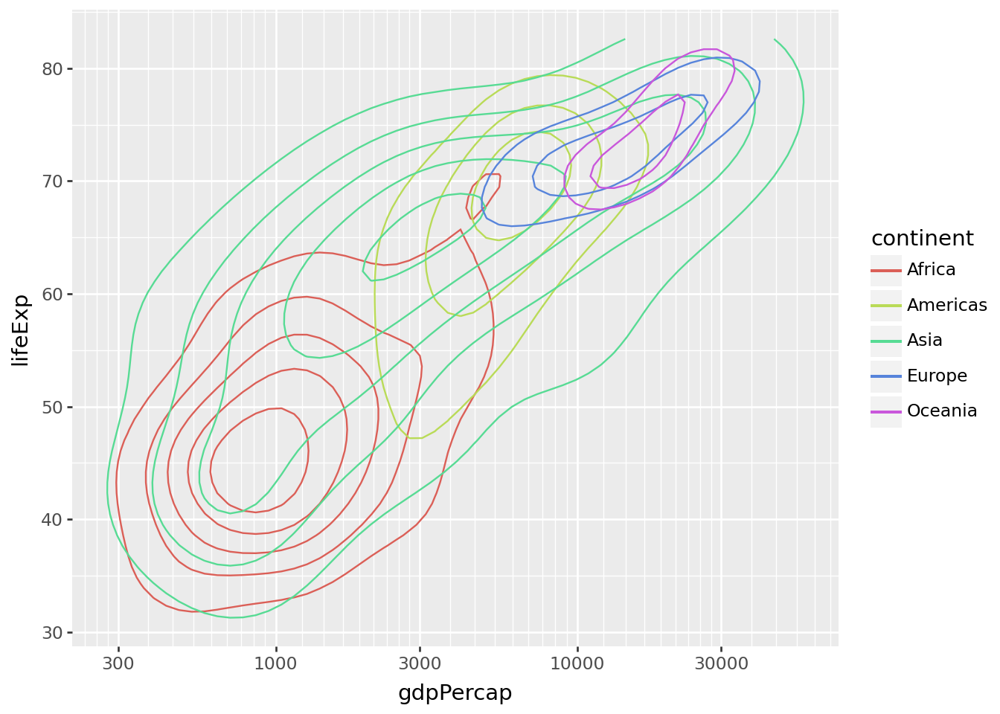
Here, geom_smooth() ignores the global color aesthetic and instead applies the color black uniformly to the trend line. The result? A single black trend line stands out clearly, while the points remain color-coded by continent.
Both approaches work well, and the choice depends on how you want to structure your code and highlight different layers. Managing global and layer-specific mappings is a powerful feature in plotnine that gives you flexibility in creating clean, insightful plots.
VIDEO 10 Factors
Do you want to learn a nifty trick that can improve your data visualization? This method can be useful when you want to visualize a numeric variable which has a limited number of distinct values.
Imagine we’re working with year, which is technically a numeric variable. But for some visualizations it might make more sense to treat each year as a separate category. How do we do that without modifying the data?
Simple! Instead of referencing year as a string ('year'), wrap it in factor(), like this 'factor(year)'. This shorthand plotnine function converts a numeric variable into a categorical one on the fly, with each distinct value treated as its own category.
Let’s put this into practice with a couple of challenges!
Create a boxplot of life expectancy over time, treating year as a categorical variable. Using this plot, can you detect when the interquartile range of life expectancy—the middle 50% of values—was the smallest?
Then apply the same concept to gdpPercap.
Create a boxplot of GDP per capita by year, but this time keep it on a logarithmic scale, to make the data easier to interpret. As GDP per capita is now on the y-axis, use the scale_y_log10() function! Compare the interquartile range of GDP per capita in 2007 with that in 1952. Is the world today more or less diverse in terms of economic inequality?
Challenge
- Make a boxplot of life expectancy by year. When was interquartile range of life expectancy the smallest?
- Make the same plot of gdpPercap (on a log scale) per year. Is the world today more or less diverse than in 1952?
Go ahead and give it a try. Pause the video and come back once you have your answer!
< PAUSE >
(
ggplot(gapminder)+
geom_boxplot(mapping = aes(x='factor(year)', y='lifeExp', group='year'))
)
(
ggplot(gapminder)+
geom_boxplot(mapping = aes(x='factor(year)', y='gdpPercap', group='year')) +
scale_y_log10()
)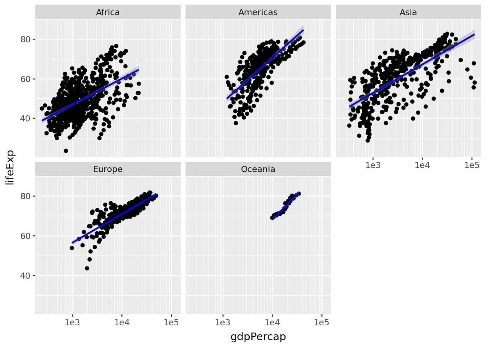
Looking at these two plots, you might notice a fascinating pattern.
You’re absolutely right: economic inequality has grown in the recent decades. In 1952, the world was much poorer, but there was a greater sense of uniformity across nations. By 2007, while the world is significantly wealthier on average, the disparities have widened.
And those outliers? Intriguing, aren’t they? Three countries stand apart from the rest in the 1952. Which ones could they be? We’ll revisit these mysteries after diving into data wrangling techniques.
Great work on these challenges! These exercises show the power of visualizing data in different ways and how little tricks like factor() can make your plots much clearer. Next, we’ll explore other types of plots that can uncover even more insights. Stay tuned, and I’ll see you in the next lesson!
VIDEO 11 More geoms
By now, you’ve learned so much about using plotnine to create insightful visualizations. But we’ve barely scratched the surface!
One of the most exciting features of plotnine is the sheer variety of geoms—the building blocks for visualizing data. Start typing geom_ in your notebook. Press TAB, and you’ll see a list of options pop up. It’s like a treasure chest of possibilities, and each geom offers a unique perspective on your data.
Let’s put your skills to the test with a few new challenges!
Histograms are perfect for exploring the distribution of a single variable. Let’s start with life expectancy.
Challenge
Make a histogram of life expectancy. What is the shape of the distribution? How many modes (peaks) does the distribution of life expectancy have? What value of the bins parameter look reasonable?
< PAUSE >
(
ggplot(gapminder)+
geom_histogram(mapping = aes(x='lifeExp'), bins=100)
)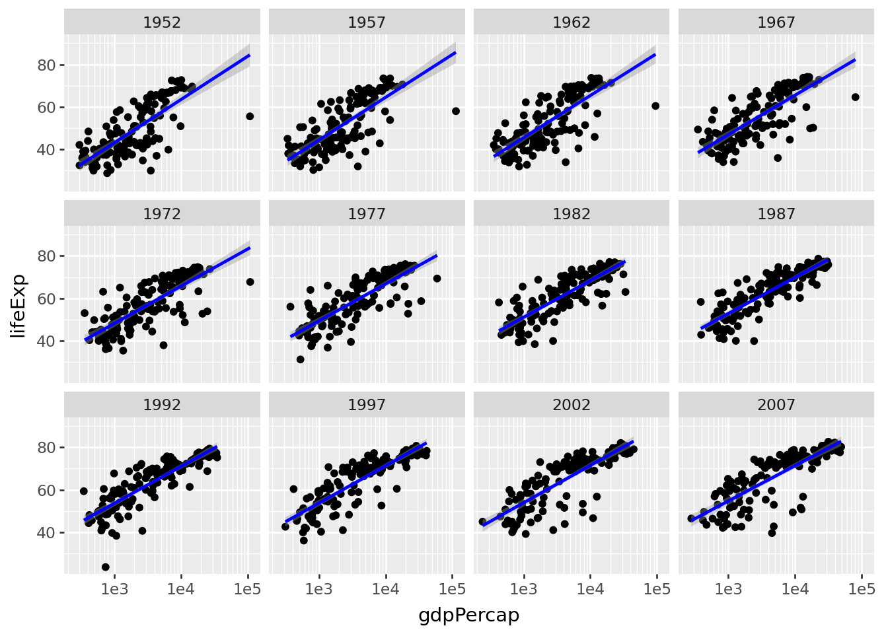
Pause the video and try it yourself! Create a histogram and observe the shape of the distribution. How many peaks—or modes—does it have? Play around with the bins parameter. Adjusting the number of bins changes the granularity of your histogram, which can affect how you interpret the distribution. What value of bins seems reasonable to you?
Next up: density plots. These are smoothed-out versions of histograms, showing the probability distribution of your data.
Create a simple density plot for life expectancy. You can do it! Start typing ‘geom_’ press tab, and you will find the function you need. Do you see it? What if you want to compare distributions across continents? Add a color aesthetic.
Challenge
Build a density function. How would you compare density functions of different continents?
< PAUSE >
(
ggplot(gapminder)+
geom_density(mapping = aes(x='lifeExp'))
)
(
ggplot(gapminder)+
geom_density(mapping = aes(x='lifeExp', color='continent'))
)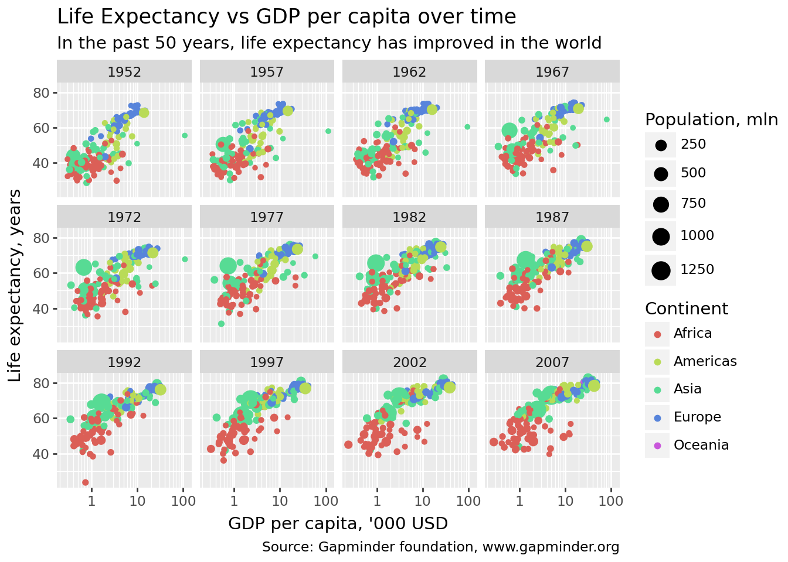
Right! You can split the data by continent by adding a color aesthetic and linking it to the variable continent. Or take it one step further! Use the fill aesthetic (in addition to color) to fill the areas under the curves. Add some transparency with alpha for a cleaner visualization like this:
< PAUSE >
(
ggplot(gapminder)+
geom_density(mapping = aes(x='lifeExp', color='continent', fill='continent'), alpha=0.3)
)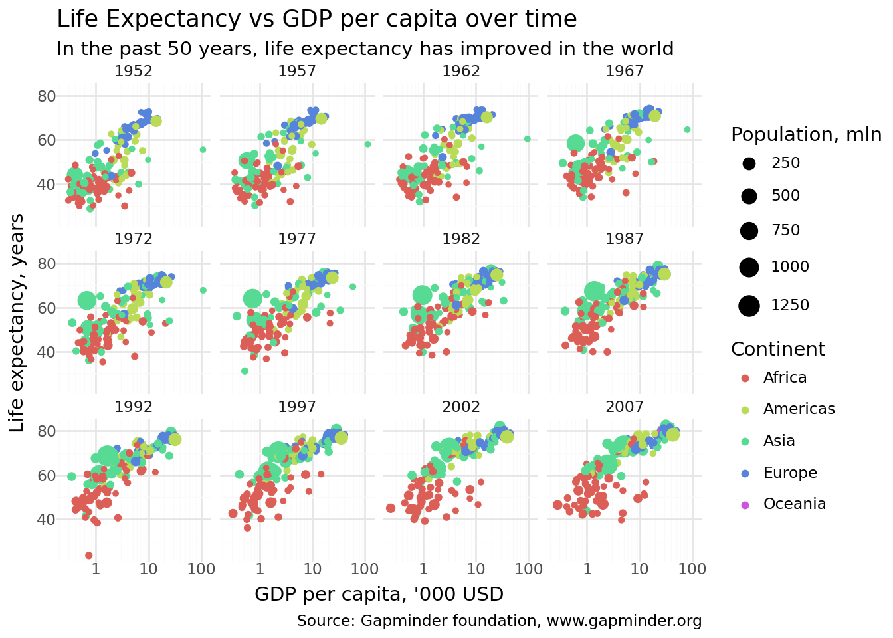
These plots help us see how life expectancy varies not just overall, but also within each continent. Notice any interesting patterns? What might explain the peaks—or modes—you see in the distributions?
Now let’s level up with 2D density plots. These are excellent for visualizing relationships between two variables. Start by creating a density plot of log GDP per capita vs. life expectancy (use geom_density_2d() function):
Challenge
Build a graph using geom_density2d() for log GDP per capita vs life expectancy. How many clusters of datapoints can you identify? What if you look at it by continent?
< PAUSE >
(
ggplot(gapminder)+
geom_density_2d(mapping = aes(x='gdpPercap', y='lifeExp'))+
scale_x_log10()
)
What do you see? Notice the two distinct clusters? One cluster represents countries that are poorer and have lower life expectancy, while the other includes those that are wealthier and healthier.
Now let’s break it down by continent. Add a color aesthetic to see how regions of the world are distributed.
Challenge
Add a color aesthetic to see how regions of the world are distributed
< PAUSE >
(
ggplot(gapminder)+
geom_density_2d(mapping = aes(x='gdpPercap', y='lifeExp', color='continent'))+
scale_x_log10()
)
Isn’t that fascinating? The lower cluster is primarily made up of African countries, while the higher cluster mostly includes Europe and Oceania. Asia? It’s scattered across both clusters, reflecting its diversity in economic and health outcomes. These exercises highlight the flexibility and power of plotnine. Whether it’s histograms, density plots, or advanced 2D density visualizations, each plot adds a new layer of understanding to your data.
VIDEO 12 Faceting
When your graph starts to feel a bit too crowded—perhaps with too many layers or overlapping aesthetics—there’s a simple solution: faceting. Faceting allows you to split your data into separate panels, creating multiple similar graphs for subsets of your data. This can make complex trends easier to spot and comparisons much clearer.
In plotnine, faceting is incredibly easy to use. Let’s revisit one of our earlier graphs and apply faceting to organize it by continent.
< PAUSE >
(
ggplot(gapminder, mapping = aes(x = 'gdpPercap', y = 'lifeExp')) +
geom_point() +
geom_smooth(color="blue") +
scale_x_log10() +
facet_wrap('continent')
)
Here’s what’s happening:
facet_wrap('continent')instructs plotnine to create a separate panel for each unique value in the continent column.- Panels are arranged from left to right, and when they don’t fit on one row, they “wrap” onto the next line.
The result? A clean, organized set of charts where each panel highlights the GDP-per-capita and life expectancy trends for a specific continent. Faceting is especially helpful when the number of panels is manageable, and it lets us compare trends within each group side by side.
Let’s take this idea further. What happens to the relationship between GDP per capita and life expectancy over time?
Try faceting by year instead of continent.See if you can answer these questions
Question
- Do the slopes of the trend lines change over the years?
- How does the clustering of data points evolve as time progresses?
This exercise offers an incredible opportunity to see how historical events, global growth, and inequality have shaped the world over decades.
Challenge
Facet the following plot by year, keeping the linear smoother. You can edit this sample code
(
ggplot(gapminder, mapping = aes(x = 'gdpPercap', y = 'lifeExp')) +
geom_point() +
geom_smooth(color='blue') +
scale_x_log10() +
facet_wrap('continent')
)< PAUSE >
(
ggplot(data = gapminder, mapping = aes(x = 'gdpPercap', y = 'lifeExp')) +
geom_point() +
geom_smooth(color='blue') +
scale_x_log10() +
facet_wrap('year')
)
With everything we’ve learned so far, we can summarize the plotnine template as follows::
< PAUSE >
(
ggplot(<DATA>) +
<GEOM_FUNCTION>(mapping = aes(<MAPPINGS>)) +
<SCALE_FUNCTION> +
<FACET_FUNCTION>
)Faceting is a powerful addition to your visualization toolkit, especially when your data has distinct groups or categories. Whether you’re analyzing trends over continents or time, faceting can make your insights clearer and more impactful.
So, go ahead—try faceting your own graphs. You’ll be amazed at what you uncover!
VIDEO 13 Labeling and styling
We’ve built our chart layer by layer, and now it’s time to refine it for presentation—whether for your boss, a client, or publication. The final touches, like annotations and labels, can make all the difference in ensuring your audience understands your insights clearly.
Let’s start with some practical data transformations. Instead of showing GDP per capita in raw numbers, wouldn’t it be better to express it in thousands of dollars? Similarly, population is easier to interpret when expressed in millions.
With plotnine, we don’t need to preprocess our data for this. You can specify transformations directly in your chart code. For example gdpPercap/1e3 divides GDP per capita by 1,000, and uses scientific notation (1e3) for convenience. Similarly, you can use pop/1e6 to show population in millions.
To make our chart clear and professional, we’ll use the labs() function. This function gathers all labels in one place, allowing us to customize:
- Title and subtitle at the top,
- Caption at the bottom,
- Labels for x, y, and any mapped aesthetics, like color or size.
Here’s an example of a polished, annotated chart:
< PAUSE >
(
ggplot(data = gapminder) +
geom_point(mapping = aes(x = 'gdpPercap/1e3', y = 'lifeExp', size='pop/1e6', color='continent')) +
scale_x_log10() +
facet_wrap('year') +
labs(title="Life Expectancy vs GDP per capita over time",
subtitle="In the past 50 years, life expectancy has improved in the world",
caption="Source: Gapminder foundation, www.gapminder.org",
x="GDP per capita, '000 USD",
y="Life expectancy, years",
color="Continent",
size="Population, mln")
)
Each label corresponds to the aesthetics used in the aes() mappings. Make sure all mapped aesthetics are labeled, even if they appear in just one layer.
Now, let’s make your chart stand out! plotnine offers pre-selected themes that adjust the colors, fonts, and overall style of your plots.
One of my favorites is theme_minimal(). It simplifies the design, creating a clean and modern look:
< PAUSE >
(
ggplot(data = gapminder) +
geom_point(mapping = aes(x = 'gdpPercap/1e3', y = 'lifeExp', size='pop/1e6', color='continent')) +
scale_x_log10() +
facet_wrap('year') +
labs(title="Life Expectancy vs GDP per capita over time",
subtitle="In the past 50 years, life expectancy has improved in the world",
caption="Source: Gapminder foundation, www.gapminder.org",
x="GDP per capita, '000 USD",
y="Life expectancy, years",
color="Continent",
size="Population, mln") +
theme_minimal()
)
plotnine offers plenty of built-in themes to match your purpose:
theme_dark()for a sleek, high-contrast look.theme_linedraw()for a simple, hand-drawn aesthetic.theme_xkcd()for a playful, comic-style appearance.theme_538()for a polished, professional newsroom feel.
Themes contributed by the community can add even more variety. So, explore, experiment, and find the one that best suits your data story.
Congratulations! You’ve learned about aesthetics, scales, different types of geoms and now you also know how to annotate and apply themes to your visuals to make them more compelling. With these skills, you’re ready to create polished, professional-quality charts that truly stand out.
Good luck, and we can’t wait to see the insights you’ll uncover!